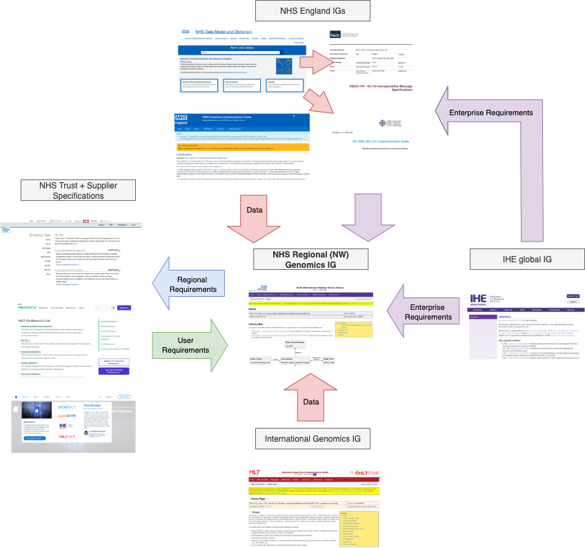

NHS North West Genomics
0.2.2 - ci-build

NHS North West Genomics
0.2.2 - ci-build

NHS North West Genomics, published by NHS North West Genomics. This guide is not an authorized publication; it is the continuous build for version 0.2.2 built by the FHIR (HL7® FHIR® Standard) CI Build. This version is based on the current content of https://github.com/nw-gmsa/nw-gmsa.github.com/ and changes regularly. See the Directory of published versions
This implementation guide primarily focuses on the Diagnostic Workflow and how it integrates within the broader health data model, as illustrated in the diagram above.
In software design, these areas are often referred to as domains. The Genomic Diagnostic Workflow operates across several of these domains — in software architecture terms, this is known as a bounded context.
Diagnostic Workflow - MindMap
This guide uses the following concepts:
To align these perspectives, this guide defines the following relationship:
---
title: Archetype, Entities and Events
---
erDiagram
Archetype ||--|{ Entity : hasMany
Archetype }|--|| Event : hasMany
Event ||--|| Entity : oftenOne2One
The Archetype follows the Domain Archetype concept from Data Mesh principles and serves as a bridge between data architecture and software engineering.
| Domain Archetype | Archetype Examples | Entity Examples | Event Examples |
|---|---|---|---|
| Laboratory Order | HL7 v2 OML_O21 | HL7 v2 Segment | |
| Laboratory Report | HL7 Lab Results Interface (extends HL7 v2 ORU_R01) | HL7 v2 Segment | |
| Genomic Reporting - HL7 FHIR Profile | HL7 FHIR Resource | FHIR Workflow | |
| openEHR Genomic Module Archetypes | |||
| Health Document | IHE XDS Submission Set | HL7 v2 MDM_T01 |
This domain focuses on genomic and molecular diagnostics, and the main Archetypes are:
Data contracts govern all interactions defined within this implementation guide and apply to all entities, messages (archetypes), and events. They are primarily specified using HL7 FHIR; where appropriate, mappings to HL7 v2 and IHE XDS are also provided.
graph TD
EHR[EPR] <--> |HL7 v2<br/>Orders & Reports| RIE
LIMS[LIMS] <--> |HL7 v2<br/>Orders & Reports| RIE
subgraph HIE["Health Information Exchange"]
RIE[Regional Orchestration Engine] --> |Store<br/>HL7 FHIR| CDR[Genomic Data Repository]
end
Clinician[Data Sharing<br/>Clinical Apps<br/>Single Patient Record] --> |Read<br/>HL7 FHIR| CDR
AI[Operational AI] --> |Read<br/>HL7 FHIR| CDR
Ops["Operations Monitoring (Real Time Analytics)"] --> |Read<br/>HL7 FHIR| CDR
CDR --> OLAP[Data Warehouse]
A[Analytics and AI] --> OLAP
OLAP --> FDP[Federated Data Platform]
A --> FDP
classDef green fill:#D5E8D4;
class FDP,OLAP,CDR,LIMS,EHR green
The diagram above illustrates the scope of the data contracts covered by this guide. Specifically, it excludes the definition of data contracts for the following systems and domains:
This guide includes the definition of data contracts for:
This model requires coordination between NHS Trusts and regional standardisation of HL7 (v2 and FHIR). Key changes include:
The RIE will not undertake any transformation of HL7 messages to meet external system or individual NHS Trust requirements. Responsibility for transforming messages for supplier systems remains with each NHS Trust’s TIE. It is therefore the responsibility of the NHS Trust TIE to ensure that data is provided in the correct format for its system suppliers. Any amendments to this arrangement may be requested through the change process.
| Data Contract | Type | HL7 FHIR | HL7 v2 Segment | IHE XDS | HL7 v2 Message | FHIR Message/Transaction |
|---|---|---|---|---|---|---|
| Genomic Test Order | Message/Archetype | OML_O21 | Message Definition - Laboratory Order | |||
| Genomic Test Report | Message/Archetype | ORU_R01 | ||||
| Patient | Entity & Event | Patient | PID | |||
| Organisation | Entity | Organization | ||||
| Service Request | Entity | ServiceRequest | ORC | |||
| Diagnostic Report | Entity | DiagnosticReport | OBR | |||
| Specimen | Entity | Specimen | SPM | See IHE Specimen Event Tracking (HL7 v2 SET) | ||
| Observation | Entity | Observation | OBX | |||
| Document Metadata | Entity & Event | DocumentReference | TXA and OBX | Document Entry - DocumentReference | MDM_T02 | See IHE MHD ITI-105 |
NW Genomics Data Team) review the item and assess its feasibility.NW Genomics Data Team.flowchart TD
A[Data Consumer<br/>Identifies Issue or New Constraint]
B[Log Requirement / Issue<br/>NH Genomics IG Issues]
C[NW Genomics Data Team<br/>Review & Feasibility Assessment]
D["Create or Update<br/>Data Contract<br/>Implementation Guide (PR)"]
E[NW Genomics Data Team<br/>Review & Approval]
F[Release Change]
A --> B --> C --> D --> E --> F
The data model used in this guide is a combination of data and workflow requirements from a variety of other guides.

North West Genomics IG
IG © 2024+ NHS North West Genomics. Package fhir.nwgenomics.nhs.uk#0.2.2 based on FHIR 4.0.1. Generated 2026-04-10
Links: Table of Contents |
QA Report
| New Issue | Issues
Version History |
 |
Propose a change
|
Propose a change